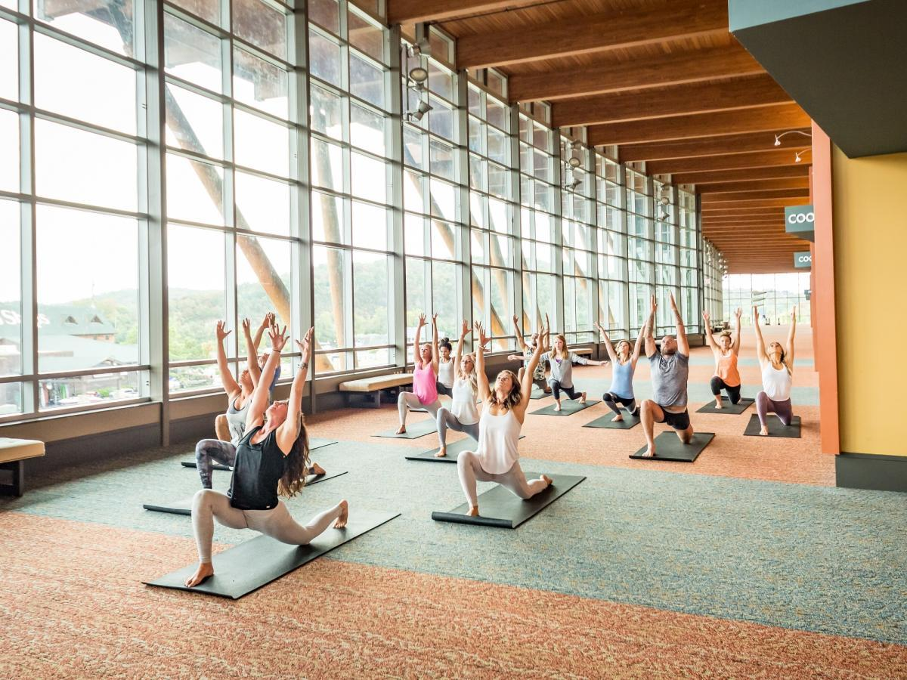
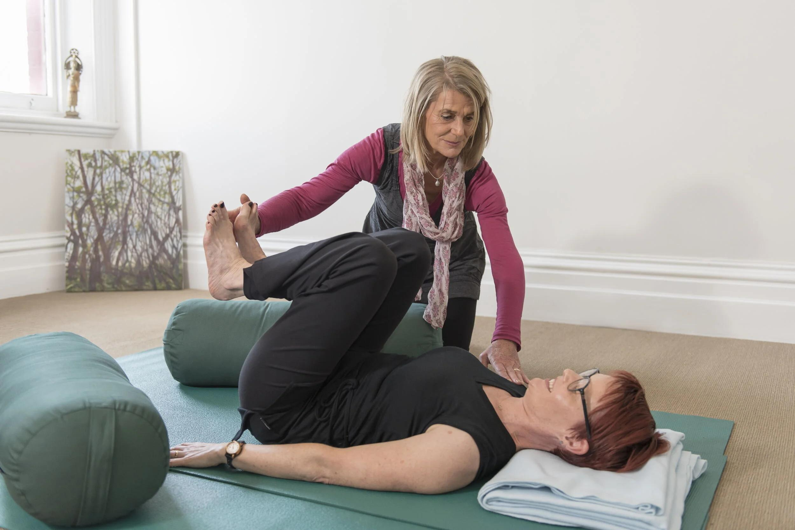
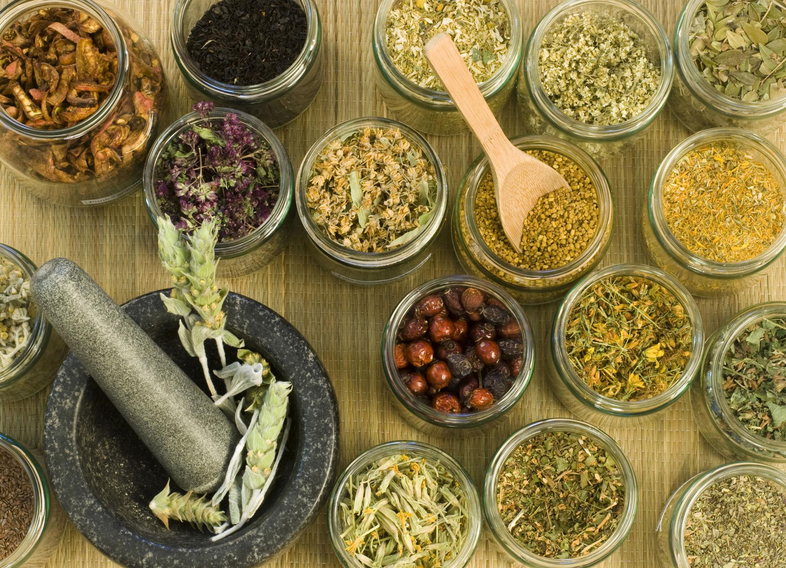

True wellness is not an elusive secret; it is an educated, conscious return
to the natural laws governing human vitality. Explore our comprehensive
curriculum examining the science, philosophy, and daily practices that
anchor enduring health throughout life.
In traditional naturopathy, the human body is recognized as an interconnected biological ecosystem capable of continuous self-renewal when obstacles to health are eliminated. Rather than suppressing acute expressions of fatigue or tension, natural therapeutics support the body's physiological recuperative faculties through wholesome nutrition, pure hydration, postural ease, and deep nervous system quietude.
Click any module to read detailed clinical explanations, historical context, and practical steps you can implement today.
 Topic 01
Topic 01
Examine the historical lineage and foundational tenets of naturopathy: First Do No Harm, Treat the Whole Person, and Doctor as Educator.

Topic 02Understand why yoga therapy is far more than physical exercise: it is a functional movement and nervous system recalibration practice.
Explore how conscious diaphragmatic breathwork directly regulates heart-rate variability (HRV) and activates the vagus nerve.
Discover the principles of plant-forward, seasonal, and minimally processed nourishment designed to nourish the gut microbiome.
Learn how aligning waking times, hydration, meal windows, and digital boundaries with natural daylight stabilizes hormone production.

Topic 06Delve into the distinction between passive collapse (scrolling on devices) versus true physiological down-regulation and somatic rest.
Expanding your understanding through clinical studies, botanical heritage, and experiential nature-cure principles.


Rosemary, spearmint, and broad-leaf sage contain volatile monoterpenes that gently cross the blood-brain barrier via olfactory pathways, inducing alert calm without neurological agitation.
Read Botanical Notes →Every botanical tincture, steam bath infusion, and culinary garnish used at Verdant Life originates from carefully vetted organic growers or our on-site biodynamic gardens.
Explore Our Gardens →